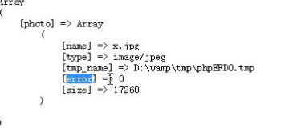

$_FILES接收文件上传
------是PHP内置的专门用来接收上传文件的全局数组
当上传文件是需要设置 enctype="multipart/form-data"，且只能post方式---get方式接收不到数据（空数组）
数据提交默认会将提交的数据保存在临时目录，不处理则默认当垃圾删除。
---需要指定提交目录
move_uploaded_file($files, './upload.jpg');

error:---0上传成功
---1上传错误
sleep（3）---让程序延迟执行3秒